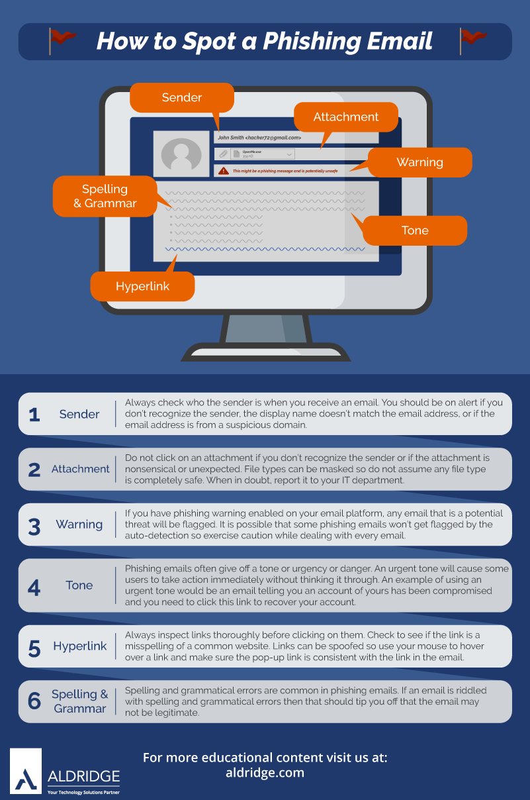

How To Spot Phishing


Emails you must click, call, or open an attachment right away should be avoided. They will frequently say that you must act immediately to receive a prize or avoid a penalty. Phishing attacks and frauds frequently use deception to create a false sense of urgency. They do this so you don't have to think about it or consult with a trustworthy counselor who can warn you.
While receiving an email from someone for the first time is not uncommon, especially if they are from outside your organization, it could be a symptom of phishing. When you receive an email from a sender you don't recognize or that Outlook flags as a new sender, take a minute to carefully analyze it before proceeding.
Editorial staffs are common in professional corporations and organizations to ensure that clients receive high-quality, professional content. It could be a scam if an email message contains evident spelling or grammatical problems. These errors can be the consequence of a clumsy translation from another language, or they can be deliberate attempts to get over filters that aim to stop these attacks.
An organization that works with you should know your name, and personalizing an email is simple these days. If the email begins with the phrase "Dear Sir or Madam," it's a red flag that it's not from your bank or shopping site.
If the email claims to be from a reputable company, like Microsoft or your bank, but the email is being sent from another email domain like Gmail.com, or microsoftsupport.ru it's probably a scam. Also be watchful for very subtle misspellings of the legitimate domain name. Like micros0ft.com where the second "o" has been replaced by a 0, or rnicrosoft.com, where the "m" has been replaced by an "r" and a "n". These are common tricks of scammers.
An organization that works with you should know your name, and personalizing an email is simple these days. If the email begins with the phrase "Dear Sir or Madam," it's a red flag that it's not from your bank or shopping site.
If the email claims to be from a reputable company, like Microsoft or your bank, but the email is being sent from another email domain like Gmail.com, or microsoftsupport.ru it's probably a scam. Also be watchful for very subtle misspellings of the legitimate domain name. Like micros0ft.com where the second "o" has been replaced by a 0, or rnicrosoft.com, where the "m" has been replaced by an "r" and a "n". These are common tricks of scammers.
According to Proofpoint's 2022 State of the Phish Report, phishing attacks hit 83 percent of businesses last year.
Meanwhile, according to Verizon's 2021 Data Breach Investigations Report, phishing is involved in 25% of all data breaches.
We explain five signs to help you recognize scams in this article using genuine phishing email instances.